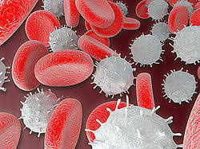

श्वेत रक्त कोशिका

श्वेत रक्त कोशिका मानव शरीर में सहज प्रतिरक्षा प्रणाली का मुख्य भाग हैं। इन कोशिकाओं का जीवन काल कुछ दिन से लेकर वर्षों का होता है। ये लाल रक्त कोशिकाओं से बड़ी, किंतु संख्या में कम, अनियमित आकार की एवं केन्द्रक युक्त होती हैं। मनुष्य के एक घन मिलीमीटर रक्त में इनकी संख्या लगभग 7500 (6000-10,000) तक होती है।
विशेष बिंदु
इन रक्त कोशिकाओं में हीमोग्लोबिन नहीं पाया जाता, इसलिए ये सफ़ेद या रंगहीन होती हैं।
श्वेत रक्त कोशिकाएँ या श्वेताणु या ल्यूकोसाइट्स शरीर की संक्रामक रोगों और बाह्य पदार्थों से रक्षा करने वाली प्रतिरक्षा प्रणाली की कोशिकायें हैं।
ल्यूकोसाइट्स पाँच विभिन्न और विविध प्रकार की होती हैं, लेकिन इन सभी की उत्पत्ति और उत्पादन अस्थि मज्जा की एक मल्टीपोटेंट, हीमेटोपोईएटिक स्टेम सेल से होता है।
ये कोशिकाएँ पूरे शरीर में पाई जाती हैं, जिसमें रक्त और लसीका प्रणाली शामिल हैं।
मानव रक्त में इन कोशिकाओं की संख्या प्रायः किसी रोग का सूचक होती है। आमतौर पर रक्त की एक लीटर मात्रा में 4×109 से लेकर 1.1×1010 के बीच श्वेत रक्त कोशिकायें होती हैं, जो किसी स्वस्थ वयस्क में रक्त का लगभग एक प्रतिशत होता है।
इन कोशिकाओं के भौतिक गुण, जैसे- मात्रा, चालकता और कणिकामयता, सक्रियण, अपरिपक्व कोशिकाओं की उपस्थिति, या श्वेतरक्तता की हालत में घातक ल्यूकोसाइट्स की उपस्थिति के कारण बदल सकते हैं।
श्वेत रक्त कोशिकाओं की संख्या में ऊपरी सीमा से अधिक हुई वृद्धि 'श्वेताणुवृद्धि' या 'ल्यूकोसाइटोसिस' कही जाती है, जबकि निम्न सीमा के नीचे की संख्या को 'श्वेताणुह्रास' या 'ल्यूकोपेनिया' पुकारा जाता है।